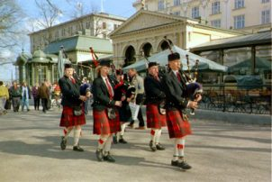

2. Helsinki Pipes and Drums

Helsinki Pipes and Drums aloitti toimintansa vuonna 1991 MacGregor Highlanders –nimisenä. Nimi vaihdettiin vuonna 1997. Yhtyeen ansiokkaana johtajana (Pipe Major, P/M) toimi vuoteen 2001 asti Gustav Henriksson. Hänen paikkansa korvasi 2002-2006 Annukka Matilainen. Orkesteria johtaa nyt Eevastiina Korri.
Esiintyvään kokoonpanoon kuuluu kuusi ylämaan säkkipillin soittajaa sekä kolme rumpalia.
Yhtye harjoittelee säännöllisesti ja on vuosien varrella esiintynyt monilla festivaaleilla,
televisiossa sekä erilaisissa tilaisuuksissa, mm.:
|
 |
Merkittävä osa koulutus- ja kulttuuriyhteistoimintaa tapahtuu pohjoismaisessa yhteistyössä. Opettajia ja soittajia on useaan kertaan tuotettu Ruotsista. Myös Skotlannista on pari kertaa käynyt opettajia Suomessa.
Yhtyeen jäsenet ovat vuosien mittaan osallistuneet kursseille ja kilpailuihin Tanskassa ja
Ruotsissa. Vuoden 2001 kilpailuissa yhtye sijoittui kolmanneksi omassa sarjassaan ja soittajat saivat
kaikkiaan kahdeksan palkintoa sarjoissaan, mitä on pidettävä varsin hyvänä menestymisenä.
Yhtyeen ohjelmisto koostuu lähinnä perinteisestä skotlantilaisesta musiikista, jonka tyypillisenä osana
ovat erilaiset marssisikermät. Ohjelmistoon kuuluu myös nopeampia tanssisävelmiä - strathspey, reel,
jig, hornpipe -sekä myös uudempaa moniäänistä musiikkia jota esitetään tarvittaessa sähköisen orkesterin
säestyksellä.
Esitykset koostetaan kutakin tilaisuutta varten sopiviksi kokonaisuuksiksi, jota voidaan vielä soveltaa
esiintymistilanteessa yleisön reagoinnin mukaan. Usein esitys kannattaa yleisön
mielenkiinnon ylläpitämiseksi koostaa lyhyehköistä (5 - 15 min) osista, joita esitetään noin 1 - 2 /
tunti sekä yhdestä pidemmästä 10 - 20 min esityksestä. Tämä rakenne mahdollistaa myös soittimien
vireessä pitämisen.
Yhtye esiintyy aina pukeutuneena perinteiseen skotlantilaiseen asuun ja esiintymisissä noudatetaan
aina perinteisiä muodollisuuksia. Esiintymisten yhteydessä yleisöllä on mahdollisuus keskustella
soittajien kanssa säkkipillinsoitosta ja skotlantilaisesta kulttuurista yleensä.
Kuuntele ääninäyte: säkkipillisti ja snare rumpali, Scotland The Brave, 4/4 marssi
Yhtyeen tämän hetken toiminnan keskeiset tavoitteet ovat oppilasmäärän kasvattaminen
(säkkipillinsoittajista kaksi opettaa uusia oppilaita), soittotaidon kartuttaminen sekä näkyvämpi
esille tuleminen.
Yhtye esiintyy erilaisissa tilaisuuksissa ja käyttää esiintymispalkkiot toimintaansa; mm. opettajien
tuottamiseen Suomeen, kilpailumatkoihin ja varustehankintoihin.
Yhtye on
tilattavissa ottamalla yhteyttä sähköpostiosoitteeseen:
keikkamyynti'at'bagpipe.fi
Lisätietoja muilta sivuilta osoitteessa www.bagpipe.fi